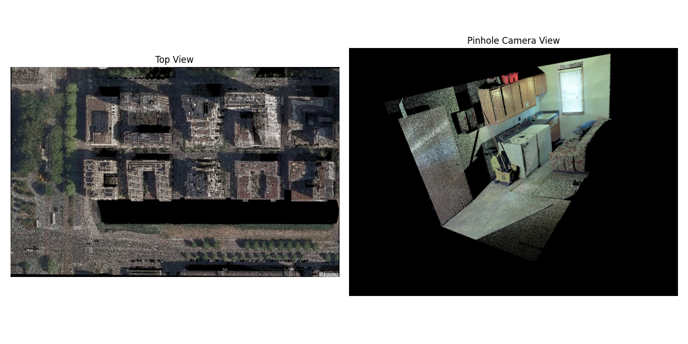

Pinhole camera guide
A pinhole view gives a perspective image from a chosen camera. It is useful
for facades, individual trees, and oblique scenes where a top view hides
vertical structure. The camera is supplied as numerical matrices through
SamLidar; PinholeView(interactive=True) currently raises
NotImplementedError.


The two views above illustrate their different camera geometry. They are historical project examples, rather than output of the current SAM 3 model.
Coordinate convention
For a world point X_world = [x, y, z], the camera coordinates are
rotation is the 3 by 3 world-to-camera matrix R and translation
is the three element vector t. They are not the camera-to-world pose.
To place the camera center at world coordinate C, compute
t = -R @ C. The returned 4 by 4 pose has R in its upper left and
t in its upper right; it is also world-to-camera.
Camera +Z points forward, +X points right, and +Y points down in
the image. Only points with positive camera Z are projected. The 3 by 3
intrinsic matrix is typically
fx and fy are focal lengths in pixels; cx and cy are the
principal point in image pixels. The image origin is at its upper left. The
implementation computes u = fx*X/Z + cx and v = fy*Y/Z + cy for this
standard matrix, then floors both coordinates to choose an integer pixel.
It also accepts an upper-left 2 by 2 skew term. The image size is set by
width and height on SamLidar; both default to 512. Choose
cx=width/2 and cy=height/2 for a centered principal point.
resolution applies only to top views and does not set pinhole pixel size.
Numerical example
Place the camera at C = (0, 0, 10) and point it straight down toward
world -Z. With world Y increasing upward in the desired image, use
R = diag(1, -1, -1) and t = -R @ C = (0, 0, 10). Let
fx=fy=500, cx=320, and cy=240 for a 640 by 480 image.
The point (1, 1, 0) becomes camera point (1, -1, 10). It lands at
u = 500*1/10+320 = 370 and v = 500*(-1)/10+240 = 190. The point
(0, 0, 11) has camera depth -1 and is discarded because it is behind
the camera.
Run the projection without downloading a model:
import numpy as np
from segment_lidar import PinholeView
points = np.array([
[1, 1, 0, 1, 0, 0], # red, projected to (370, 190)
[0, 0, 0, 0, 1, 0], # green, projected to (320, 240)
[0, 0, 11, 0, 0, 1], # behind the camera
], dtype=float)
K = np.array([[500, 0, 320], [0, 500, 240], [0, 0, 1]], dtype=float)
R = np.diag([1.0, -1.0, -1.0])
camera_center = np.array([0.0, 0.0, 10.0])
t = -R @ camera_center
view = PinholeView()
image, intrinsics, pose = view.cloud_to_image(
points, intrinsics=K, rotation=R, translation=t,
width=640, height=480,
)
assert image[190, 370].tolist() == [255, 0, 0]
assert image[240, 320].tolist() == [0, 255, 0]
assert image[240, 370].tolist() == [0, 0, 0]
Segmentation of a real cloud
The following complete example looks down at the XY center of a cloud from 30 world units above its highest point. Adjust the focal length, camera height, and orientation after inspecting the saved RGB raster. It runs SAM 3 and needs approved model access as described in Installation and model access.
import numpy as np
from segment_lidar import PinholeView, SamLidar
model = SamLidar()
points = model.read("pointcloud.las")
width, height = 1024, 768
center_xy = (points[:, :2].min(axis=0) + points[:, :2].max(axis=0)) / 2
camera_center = np.array([*center_xy, points[:, 2].max() + 30.0])
R = np.diag([1.0, -1.0, -1.0])
t = -R @ camera_center
K = np.array([
[700.0, 0.0, width / 2],
[0.0, 700.0, height / 2],
[0.0, 0.0, 1.0],
])
model.intrinsics, model.rotation, model.translation = K, R, t
model.width, model.height = width, height
ids, labels, image, K_used, pose = model.segment(
points,
view=PinholeView(),
prompt="tree",
image_path="results/pinhole_rgb.tif",
labels_path="results/pinhole_labels.tif",
)
model.write(points, ids, save_path="results/pinhole_segments.las")
K_used and pose are the matrices actually used for projection. Keep
them with the raster if you plan to transfer its labels again. For a wider
scene, lower fx and fy or move the camera farther away. Pixels outside
the image and points behind the camera receive -1.
Visibility and label transfer
For each pixel, the RGB image shows the nearest positive-depth point. Other points at the same pixel do not supply color. During label transfer, however, all points projecting to a labeled pixel receive that label, including points hidden behind the visible surface. Use additional views or 3D checks if this matters for your analysis. Empty RGB pixels are black.
distance_threshold is an optional upper limit on positive camera Z,
in the same units as the input coordinates. It is not Euclidean distance from
the camera. The same threshold is used during projection and label transfer:
model.distance_threshold = 50.0
The camera matrices must contain finite values, fx and fy must be
positive, and image dimensions must be positive. Inputs of shape (N, 3)
without RGB are rendered white.
Reuse a pinhole label raster
Pinhole GeoTIFFs have no spatial transform that can recover the camera. To
reuse a saved RGB and label pair, supply the same K, R, t,
and distance_threshold that created it. The cached image determines the
image dimensions; the current width and height are used only when
generating a new image. No SAM 3 token is needed in this example:
from segment_lidar import PinholeView, SamLidar
cached = SamLidar(
intrinsics=K_used,
rotation=pose[:3, :3],
translation=pose[:3, 3],
distance_threshold=model.distance_threshold,
)
subset = points[:1000]
ids, labels, image, _, _ = cached.segment(
subset,
view=PinholeView(),
image_path="results/pinhole_rgb.tif",
labels_path="results/pinhole_labels.tif",
image_exists=True,
label_exists=True,
)
The RGB raster must have three bands, the label raster one band, and their pixel dimensions must match. Background label 0 becomes point label -1.